2013年度の県内消費者団体地区別交流会が、1月21日（火）におこなわれた熊谷会場に引き続き、1月27日（月）川越市、29日（水）春日部で開催されました。
■川越会場
川越駅前の東上パールビルジング会議室でおこなわれた川越会場には、県西部地域で活動している地域消費者団体や生協など10団体と県域の消費者団体5団体あわせて43人、埼玉県、新座市、和光市から消費者行政担当の方々の出席をいただきました。
| 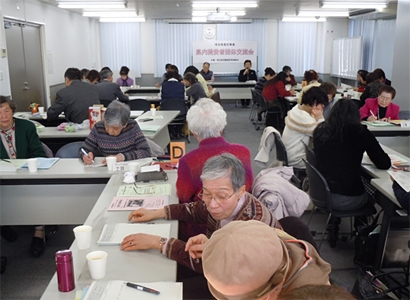 |
交流会は、埼玉消団連代表幹事の加藤ユリさん（新日本婦人の会埼玉県本部会長）の司会ではじまり、最初に埼玉消団連事務局より、「平成25年度 県内市町村消費生活関連事業調査」と、調査結果を踏まえての行政との懇談についての報告、続いて、懇談をおこなった志木市、所沢市、越谷市の各消費者団体より、その模様について報告されました。
各団体の報告の後、グループ交流では、それぞれの報告を聞いての受止め、これから自分たちで取り組んでいくことについて、自分たちの団体紹介を交えながら話し合われました。
| 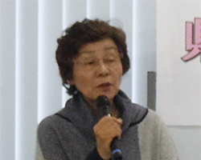 | 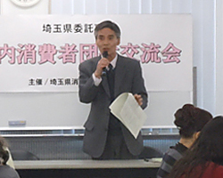 |
| 埼玉消団連 加藤ユリ代表幹事 | 行政調査結果報告（消団連事務局） |
≪報告いただいた団体≫
- 志木市くらしの会/所沢市消費者団体連絡会/越谷市消費生活研究会
| 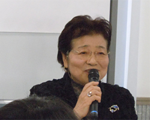 | 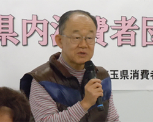 |
| 志木市くらしの会 会長 木下里美さん | 所沢市消費者団体連絡会 副会長 山本 治さん |
| 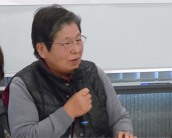 | 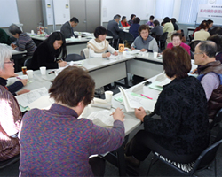 |
| 越谷市消費生活研究会 会長 中村千代子さん | グループ交流の模様 |
≪出席いただいた自治体≫
- 埼玉県 県民生活部 消費生活課・新座市 経済振興課・和光市 市民活動推進課より出席いただきました。
■春日部会場
県東部地域の地区別交流会は、消費者団体6団体、県域団体5団体から44人が参加し、春日部市の市民文化会館で開催されました。当日は、加須市、白岡市の消費者行政担当の方々にも出席をいただきました。
| 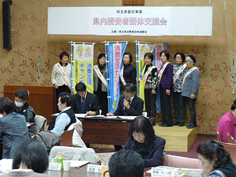 |
埼玉消団連幹事の滝澤玲子さん（埼玉県生協ネットワーク協議会会長）の司会で始まり、久喜市、加須市、越谷市の消費者団体から行政との懇談について報告されたほか、白岡市市民生活部農政商工課主査の丹下 聡氏より、白岡市の消費生活事業の取り組みについて紹介いただきました。
後段のグループ交流では、「行政とのつながりをもっと持ちたい」「会員を増やしたいのが悩み」など、率直な意見が話し合われました。また、「ネットワークを持てれば、活動の幅が広がり、地域でも私たちの活動への見方が変わって来ます。その切っ掛けをつくるのは、今でしょ！」との意見に笑みがこぼれる交流会となりました。
≪報告いただいた団体と自治体≫
- 久喜市くらしの会/加須市くらしの会/越谷市消費生活研究会
- 白岡市市民生活部農政商工課
| 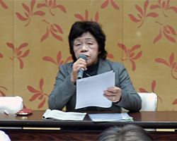 | 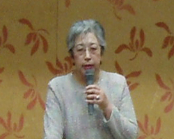 |
| 久喜市くらしの会 会長 宮内 智さん | 加須市くらしの会 会長 杉沢正子さん |
| 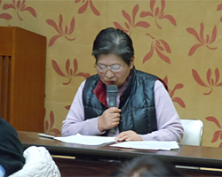 | 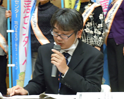 |
| 越谷市消費生活研究会 会長 中村千代子さん | 白岡市市民生活部農政商工課 丹下 聡さん |
≪出席いただいた自治体≫
- 加須市 市民相談室・白岡市 市民生活部農政商工課より出席いただきました。
 前の記事 県内消費者団体地区別交流会が開催されました（熊谷会場・1月23日掲載）
前の記事 県内消費者団体地区別交流会が開催されました（熊谷会場・1月23日掲載）